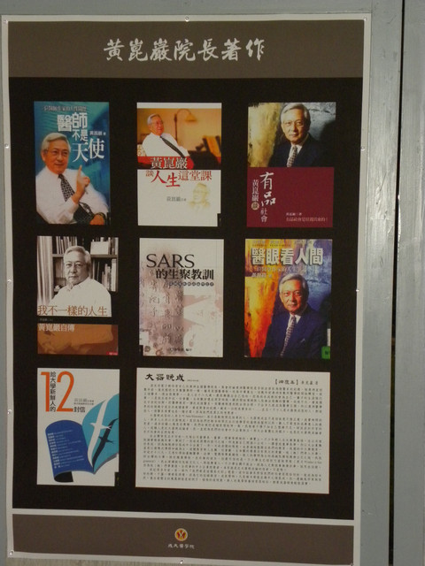
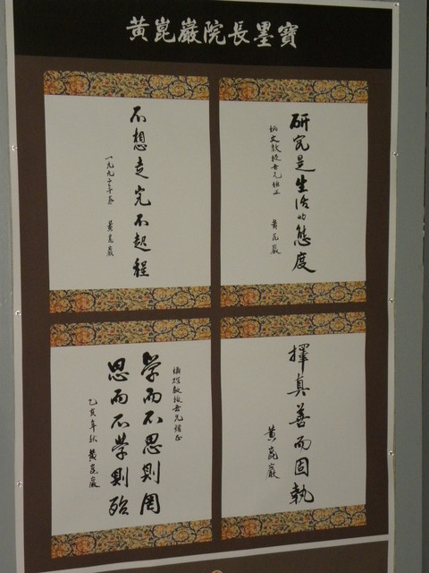
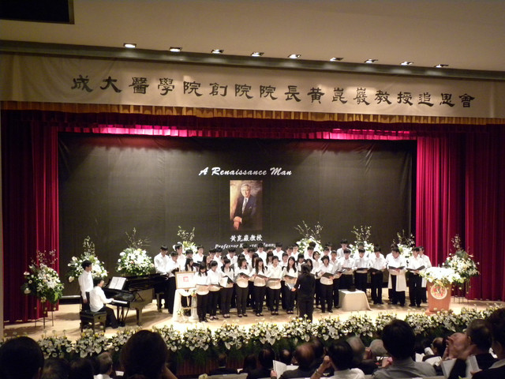

A Renaissance Man 黃崑巖教授
2012年3月29日我和老二南下台南，到成大醫學院，參加表姊夫黃崑巖前院長的追思會。一到門口立刻感到那肅穆、哀傷卻高雅的氣份！
姊夫 栩栩如生坐在他一手創設、經營的成大醫學院前，從大廰到追思會地點成杏廳前的迴廊，佈置著滿滿他的作品。

一頁書簽，八方思維：牆上掛著一幅排列整齊的書籤，從此可以看出他的細心，他就是如此與眾不同！
所有著作：


莫札特與凱子外交 (1988/01)
外星人與井底蛙（1999/01）
醫眼看人間：一位醫學作家的人生筆記（2000/04）
醫師不是天使：一位醫學作家的人性關懷（2002/09）
SARS 的生聚教訓（2003/09）
生死關頭見豁達：黃崑巖醫師談生命省思（2004/12）
黃崑巖談教養（2004/09）
黃崑巖談人生這堂課（2005/07）
給青年學生的十封信（2006/05）
黃崑巖的人生啟示錄（2006/11）
黃崑巖談人文素養（2007/02）
黃崑巖回憶錄─成大醫學中心創建始末（2007/04）
我不一樣的人生－黃崑巖自傳（2008/08）
給大學新鮮人的12封信（2008/08）
醫生不是天使：一位醫學作家的人性關懷（2009/12）
黃崑巖談有品社會（2009/09）
一年出版一本書， 實屬不易。
墨寶： 

姊夫是十項全能，而且樣樣精銳。他的字就如其人，大方、瀟灑。
進入成杏廳，不禁悲從中來，姊夫真的離開我們了！今天大家聚集一堂，在此懷念 追思！
追思會莊嚴肅穆，從全體默哀開始，由副總統蕭萬長代理總統頒發保揚令，

醫學生張邦彥演奏Schumonn 的
Traumerei，也許是姐夫生前喜愛的曲子。接著醫界大老、同學、同事、學生…陸續的致詞、追思。
大家共同的觀點：他是位在醫學背景後，有豐富的人文素養，視野寬闊、高瞻遠矚，氣度恢弘，溫文儒雅的人。集科學家、藝術家、教育家、演說家、作家….於一身。
他給”成醫人”的座右銘是：「做良醫之前，先做成功的人」，「不想走完不起程」，「擇真善而固執」，「立志把一件小事做好」。
他有極佳的口才，聽他說話或演講，有聽君一席話，勝讀十年書的感受。
他豐富的閱曆都反映在他的著作中。經常鼓勵學生要找一個「典範」，作為學習的目標，其實他就是大家「典範」。
最後表姊也上台答謝，感謝主辦單位把今天的追思會辦得如此美好、周全。
她說：「…..崑巖是位事事追求完美的人，在他身邊的親朋好友、同事，也許受過他的急躁、責難…，但他也是位凡人，我要在此代為致歉！」。
好了不起的表姊，她就是這位偉人身後的那隻推手，看著表姊薄弱的身子，站在台上，我眼前一片模糊，似乎看到記憶中
居禮夫人在站台上的模樣！
表姐不但是我們這群堂、表姐妹中最優秀的，當時在彰化女中能考上台大醫科的，她是第一位。人最標緻、功課最好，才貌雙全，和姊夫匹配，一點不遜色！
記得年輕時曾經看過「茶與同情」影片，內容已完全忘卻，但仍記得男主角John Kar 很像姊夫，是那時少女們的夢中偶像！
「追思獻唱」由成杏合唱團(也是姐夫一手摧生並任團長)演唱 感人的「化為千風」。這首曲在我痛失愛子 ”一峰” 時，美雲姨曾寄來樂譜安慰，今日聽來雙重感傷，老淚縱橫逢！

會後和表姐有一短時間的交談， 她比我們想像中還堅強，孩子們都在國外，姊夫所遺留下來的一切，都得由她獨自來處裡。心中的寂寞、不捨、感慨、千頭萬緒…..，不難想像，我也只能安慰她，此後要多為自己的健康費心、善待自己。我們高興姐夫已脫離肉體的苦難、解脫了！看他如此豐富、多彩、睿智、儒雅的人生，今日畫下如此美麗、圓滿的句點，足可慰籍他在天之靈，請您多保重！
她比我們想像中還堅強，孩子們都在國外，姊夫所遺留下來的一切，都得由她獨自來處裡。心中的寂寞、不捨、感慨、千頭萬緒…..，不難想像，我也只能安慰她，此後要多為自己的健康費心、善待自己。我們高興姐夫已脫離肉體的苦難、解脫了！看他如此豐富、多彩、睿智、儒雅的人生，今日畫下如此美麗、圓滿的句點，足可慰籍他在天之靈，請您多保重！

* Renaissance Man ：文藝復興風格的，才藝非凡出眾的人。


 我 的 故 事(0)
我 的 故 事(0)